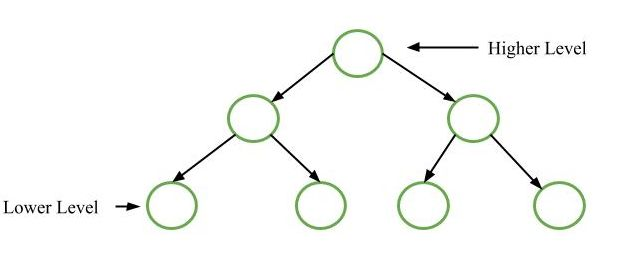
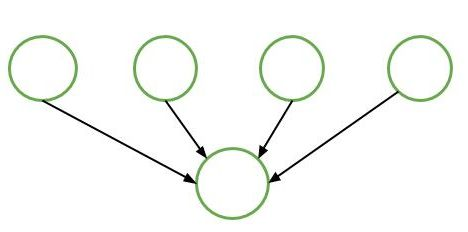
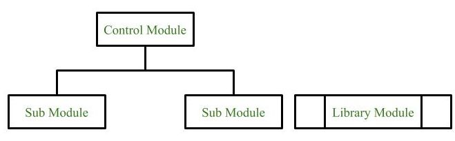
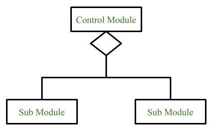
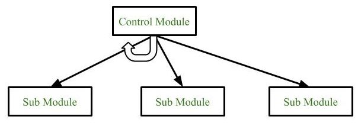
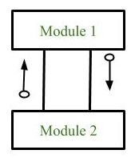
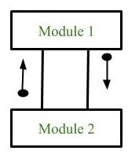
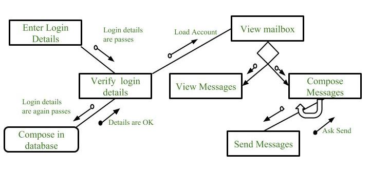

5.7 Design Structure Charts
A structure chart (also called a design structure chart) represents the hierarchical structure of modules in a system. It breaks the entire system into the lowest functional modules and describes the functions and sub-functions of each module in greater detail than a DFD.
Structure charts partition the system into black boxes — the functionality of each module is known to users, but inner details are unknown. Inputs are given to black boxes and appropriate outputs are generated. Structure charts are a key representation technique in low-level design and function-oriented design.

Purpose of structure charts
- Structure charts represent the software architecture — the various modules making up the system and their dependencies.
- They show the hierarchical calling structure: which module invokes which sub-module.
- Modules at the top level are called by modules at lower levels; components are read from top to bottom and left to right.
- When a module calls another, it views the called module as a black box, passing required parameters and receiving results.
- Structure chart representation can be directly implemented using common programming languages (procedures/functions).

Symbols in structure charts
Structure charts use a standard set of graphical symbols to represent modules, control logic, and communication between components.
1. Module
A module represents a process or task of the system. Modules are drawn as rectangles and come in three types:
- Control module: A module that branches to more than one sub-module — the top-level coordinator.
- Sub-module (child module): A module that is part of (child of) another module.
- Library module: A reusable module invokable from any module in the system — drawn with double vertical lines on the sides.

2. Conditional call
A diamond symbol represents a conditional call. The control module can select any of the sub-modules on the basis of some condition — only one branch is executed per invocation.

3. Loop (repetitive call of module)
A curved arrow represents a loop — repetitive execution of modules by the control module. All sub-modules covered by the loop repeat execution until the loop condition is satisfied.

4. Data flow
A directed arrow with an empty circle at the end represents the flow of data between modules. Data flow arrows are labelled with the name of the data being passed.

5. Control flow
A directed arrow with a filled circle at the end represents the flow of control between modules — flags, status signals, or execution control passed between caller and callee.

6. Physical storage
Physical storage represents where information is stored — typically drawn as a rounded rectangle or cylinder symbol. It indicates a database, file, or other persistent data store that modules read from or write to.
Example — structure chart for an email server
The following structure chart shows the module hierarchy for an email server system. The flow begins with login, proceeds through account verification, and branches into mailbox operations:
- Enter Login Details passes login data to Verify Login Details.
- Verify Login Details checks credentials against the database and, on success, loads the account into View Mailbox.
- View Mailbox uses a conditional call to branch into either View Messages or Compose Messages.
- Compose Messages contains a loop for repetitive composition steps and calls Send Messages.
- Data flow arrows (empty circles) carry login details and account data; control flow arrows (filled circles) carry status signals such as "Details are OK" and "Ask Send".

Types of structure chart
Structure charts are classified based on the type of system they represent. The two main types are:
- Transform-centered structure: Designed for systems that receive an input which is transformed by a sequence of operations carried out by one module. The system follows a linear input → transform → output pipeline. Common in batch processing and data-transformation systems.
- Transaction-centered structure: Designed for systems that process a number of different types of transaction. A central control module dispatches each transaction to the appropriate processing module based on the transaction type. Common in interactive systems with multiple user operations.
Module categories in function-oriented design
- Input module: Obtains data from external sources or subordinates and passes it upward.
- Output module: Sends processed data to external destinations or superordinates.
- Transform module: Performs computation or data transformation on input data.
- Coordinate module: Manages the flow of data to and from different subordinates.
- Edit module: Validates or modifies data before further processing.
Benefits of structure charts
- Improved understanding of system architecture and module hierarchy.
- Simplified communication between team members through a shared visual representation.
- Easier identification of potential issues and dependencies between modules.
- Support for modular and maintainable software design.
Structure chart vs flowchart
A brief preview — full comparison in §5.9:
- Structure chart represents software architecture (module hierarchy); flowchart represents control flow within a program.
- Structure chart shows data interchange between modules; flowchart does not show inter-module data flow.
Q: What is a structure chart? Draw and explain its symbols. How does it differ from a flowchart?
Model answer points:
- Define: hierarchical representation of modules; black-box decomposition; read top-to-bottom, left-to-right.
- Module types: control (branches to sub-modules), sub (child of another module), library (reusable, double-line box).
- Symbols: conditional call (diamond), loop (curved arrow), data flow (arrow + empty circle), control flow (arrow + filled circle), physical storage.
- Structure chart types: transform-centered (input → transform → output) vs transaction-centered (multiple transaction types).
- Module categories: input, output, transform, coordinate, edit.
- Benefits: understanding, communication, issue identification, modularity.
- vs flowchart: architecture vs control flow; shows inter-module data vs single-program logic.